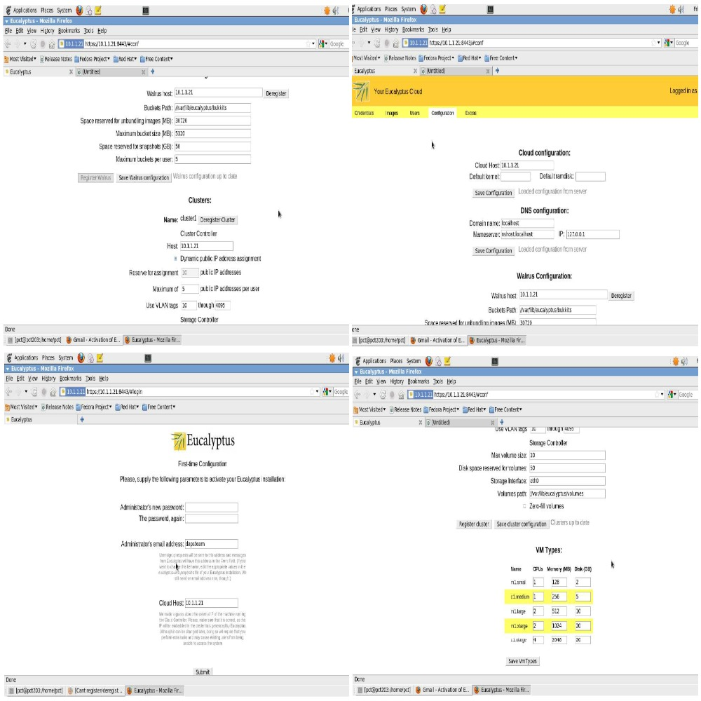

Current candidate for Master of Information and Technology with Data Management as specialization. Possess 3+ years’ experience in Microstrategy development utilizing full life cycle of Business Intelligence from designing to supporting.
LARSEN & TOUBRO INFOTECH, Mumbai, India
Client: Citibank (U.K)
INTELLISWIFT SOFTWARE INDIA PVT LTD., Mumbai, India
Developed a model in R using classification technique like KNN and Naïve Bayes with a large data set.
Applied data preprocessing and transformation.
Evaluated best model based on accuracy metric.
Two reports namely COREP (Common Reporting) and FINREP (Financial Reporting) were to be submitted to the European Banking Authority which ensured financial transparency across EEA (European Economic Area).
RoleCommon Reporting aims to increase transparency in regulatory reporting by increasing the granularity of data requirements. It applies to all credit institutions and investment firms operating in EEA. The regulation requires these firms to follow the below mentioned five reporting templates for capital adequacy and capital requirements
FINREPFinancial Reporting intends to step up the harmonization and convergence in supervisory reporting requirement. It will apply to all credit institutions that consolidate their financial reports based on IFRS. The templates covered under FINREP include:
We had proposed a software testing environment, called D-Cloud, using cloud computing technology and virtual machines with fault injection facility. Nevertheless, the importance of high dependability in a software system has recently increased, and exhaustive testing of software systems is becoming expensive and time-consuming, and, in many cases, sufficient software testing is not possible. In particular, it is often difficult to test parallel and distributed systems in the real world after deployment, although reliable systems, such as high availability servers, are parallel and distributed systems.
D-Cloud is a cloud system which manages virtual machines with fault injection facility. D-Cloud sets up a test environment on the cloud resources using a given system configuration file and executes several tests automatically according to a given scenario. In this scenario, D-Cloud enables fault tolerance testing by causing device faults by virtual machine.
We have designed the D-Cloud system using Eucalyptus software and a description language for system configuration and the scenario of fault injection written in XML. We found that the D-Cloud system, which allows a user to easily set up and test a distributed system on the cloud and effectively reduces the cost and time of testing.
My role was linux installation along with implementing the client server environment, installation/configuration of eucalyptus cloud in server with cloud controller and storage controller and setting up a virtualization environment using euca2ools.
Established the operating system (Linux) and implemented the client server infrastructure, installation/configuration of eucalyptus cloud in server with cloud controller and storage controller and setting up a virtualization environment using euca2ools. Designed, developed and documented the project.
This was a final year project for my Bachelors of Engineering in Information Technology Engineering 2012.
60%
30%
60%
40%
15%